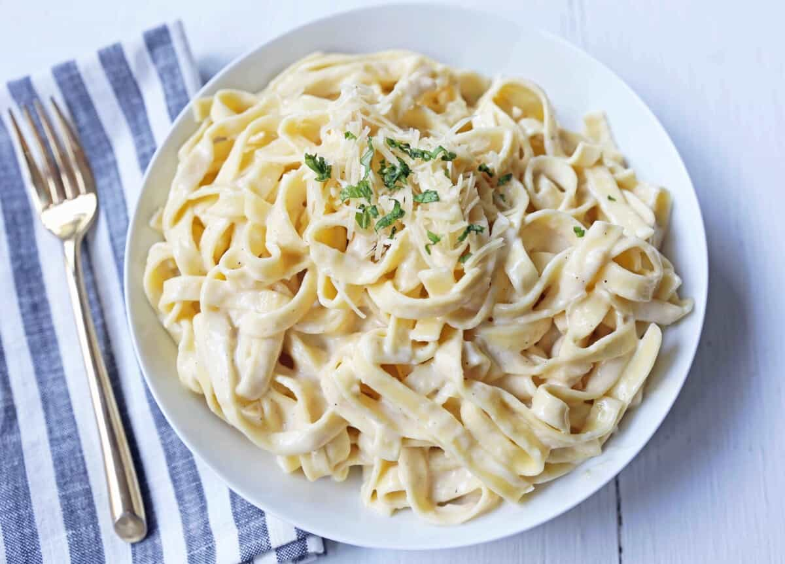

Fettuccine Alfredo Pasta

Fettuccine pasta topped with a homemade rich decadent alfredo sauce
There are certain recipes that are essential to have in your recipe box and one of them has to be a phenomenal Fettuccine alfredo recipe. Years ago, when I was teaching kids’ cooking classes, this was one of the first things I taught them. Almost every single kid around goes crazy for alfredo sauce! It is so easy to make a homemade alfredo sauce that you will never buy the jarred variety again!
Tips for making PERFECT FETTUCCINE ALFREDO:
- Start by bringing water to a boil in a large pot. Add salt to the water to season the pasta. Once it is boiling, add pasta and cook according to package instructions.
- Saute the garlic and butter together until softened — about 1 to 2 minutes.
- Add heavy cream and let simmer over medium-high heat for about 5 minutes to thicken. Add salt and pepper to taste. Add half of the parmesan cheese to the mixture and whisk well until smooth.
- Save some pasta water. The pasta water is full of flavor and can be used to thin out the sauce.
- Toss alfredo sauce with fettuccine pasta and add half of the parmesan cheese. Once it is tossed, garnish with the remaining parmesan cheese. Add a little pasta water if it needs to be thinned out.
- Garnish with Italian parsley, if so desired.
Ingredients
- In a large pot, heat water over high heat until boiling. Add salt to season the water. Once it is boiling, add fettuccine and cook according to package instructions.
- In a large skillet or pan, heat butter over medium heat. Add minced garlic and cook for 1 to 2 minutes. Stir in heavy cream.
- Let heavy cream reduce and cook for 5 to 8 minutes. Add half of the parmesan cheese to the mixture and whisk well until smooth. Keep over heat and whisk well until cheese is melted.
- Save some pasta water. The pasta water is full of flavor and can be used to thin out the sauce.
- Toss alfredo sauce with fettuccine pasta and add half of the parmesan cheese. Once it is tossed, garnish with the remaining parmesan cheese. Add a little pasta water if it needs to be thinned out.
- Garnish with Italian parsley, if so desired.

Notes
- Use real parmesan cheese, which is refrigerated.
- If you like it to be more "saucy", you may use less than 1 lb. of fettuccine pasta.
- Leftover pasta water may be used to thin out pasta sauce.